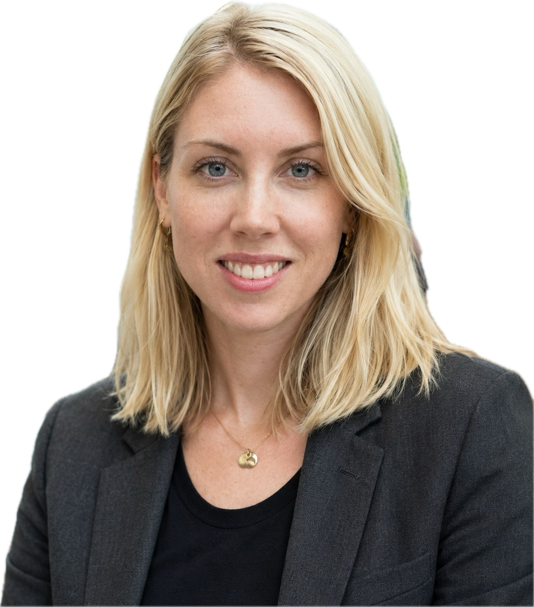
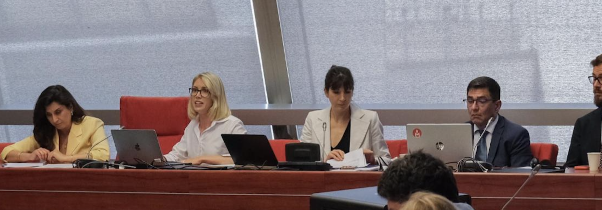
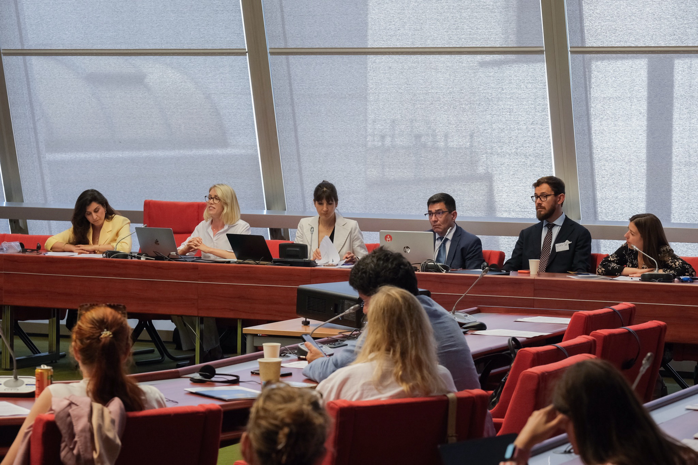
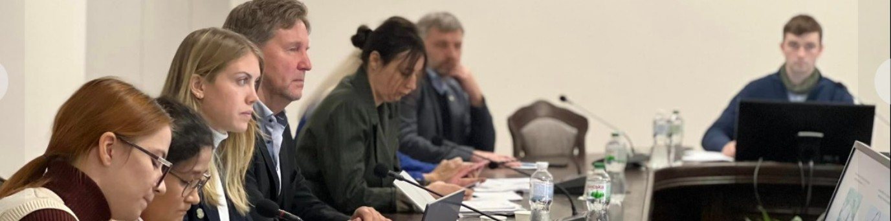

Human Rights · Dignity · Hope
Improve social sustainability practices and act in accordance with virtuous values to make a positive impact. Arbeta värdebaserat — och bygg förtroende genom verklig förändring. Travailler avec plus d'humanité — en construisant la confiance, la clarté et l'objectif qui rendent un impact réel possible. працюйте з більшою людяністю — будуючи довіру, ясність та мету, що забезпечують реальний вплив.

Why this work matters Varför detta arbete spelar roll Pourquoi ce travail compte Чому ця робота важлива
We are living through a crisis of disconnection. Polarization. Distrust. Cultures where people go through the motions without meaning. And yet — everywhere — there are glimpses of what becomes possible when dignity is restored.
Vi lever i en kris av frånkoppling. Polarisering. Misstro. Kulturer där människor går igenom rörelserna utan mening. Och ändå — överallt — finns det glimtar av vad som blir möjligt när värdighet återställs.
Nous traversons une crise de déconnexion. Polarisation. Méfiance. Des cultures où les gens font semblant sans signification. Et pourtant — partout — il y a des aperçus de ce qui devient possible quand la dignité est restaurée.
Ми переживаємо кризу відчуження. Поляризацію. Недовіру. Культури, де люди виконують рухи без сенсу. І все ж — скрізь — є проблиски того, що стає можливим, коли гідність відновлюється.
The Dignity Practice exists in that gap. Between where organizations are and where they could be.
The Dignity Practice finns i det gapet. Mellan var organisationer är och var de kan vara.
The Dignity Practice existe dans cet écart. Entre où sont les organisations et où elles pourraient être.
The Dignity Practice існує в цьому проміжку. Між тим, де організації є, і тим, де вони могли б бути.
Start the conversation Starta samtalet Commencer la conversation Розпочати розмовуWhat we offer Vad vi erbjuder Ce que nous offrons Що ми пропонуємо
here is how The Dignity Practice works with you.
så här arbetar The Dignity Practice med dig.
voici comment The Dignity Practice travaille avec vous.
ось як The Dignity Practice працює з вами.
Advisory, training, and consultancy on human rights frameworks, international humanitarian law, anti-corruption, and rule of law. Particular depth in Ukraine, EU accession processes, and children's rights.
Rådgivning, utbildning och konsultation inom ramverk för mänskliga rättigheter, internationell humanitär rätt, antikorruption och rättsstaten.
Conseil, formation et consultance sur les cadres des droits humains, le droit international humanitaire, la lutte anticorruption et l'état de droit.
Консультування, навчання та консалтинг щодо рамок прав людини, міжнародного гуманітарного права, антикорупції та верховенства права.
In 2024, Louise advised the Kharkiv National Air Force on IHL application while co-developing a 15 ECTS university course — at a time when the country was at war. That is the kind of work we do.
År 2024 rådgav Louise Charkivs nationella flygvapen om tillämpning av internationell humanitär rätt — medan landet befann sig i krig.
En 2024, Louise a conseillé la Force aérienne nationale de Kharkiv sur l'application du DIH — pendant que le pays était en guerre.
У 2024 році Луїза консультувала Харківський національний авіаційний університет з питань МГП — поки країна перебувала у стані війни.
Engage us when you need expert knowledge delivered with clarity and credibility. Ta kontakt när du behöver expertkompetens med klarhet och trovärdighet. Faites appel à nous quand vous avez besoin d'expertise avec clarté et crédibilité. Звертайтесь, коли вам потрібні експертні знання з ясністю та достовірністю. Get in touch Kontakta oss Nous contacter Зв'язатисяPolicy briefs, articles, human right impact analysis and op-eds for organizations and publications that need clear, credible writing on human rights and dignity. Keynotes and conference presentations. Teaching in academic and professional settings.
Policydokument, männisorättslig analys av påverkan av projekt eller tjänster, artiklar och debattinlägg för organisationer som behöver tydligt, trovärdigt skrivande. Keynotes och konferenspresentationer.
Notes de politique, analyses d'impact sur les droits humains, articles et éditoriaux pour les organisations qui ont besoin d'une écriture claire et crédible. Conférences et présentations.
Аналітичні записки, аналіз впливу на права людини, статті та коментарі для організацій, яким потрібне чітке письмо. Кейноути та конференційні виступи.
Engage us when you need your work written, spoken, or taught well. Ta kontakt när du behöver ditt arbete skrivet, talat eller undervisat väl. Faites appel à nous quand vous avez besoin que votre travail soit bien écrit, parlé ou enseigné. Звертайтесь, коли вам потрібно, щоб ваша робота була добре написана, виголошена або викладена. Book a lecture Boka en föreläsning Réserver une conférence Замовити лекціюFor teams navigating disruption, conflict, or cultural breakdown. Through structured listening, nonviolent communication, and human rights frameworks, we help organizations become more alive — with staff who are loyal, energized, and proud of where they work.
För team som navigerar en utmanande omvärld, konflikter eller kulturell nedbrytning. Genom strukturerat lyssnande, ickevåldslig kommunikation och ramverk för mänskliga rättigheter hjälper vi organisationer att bli mer levande.
Pour les équipes qui naviguent dans des perturbations, des conflits ou une rupture culturelle. À travers l'écoute structurée, la communication non-violente et les cadres des droits humains.
Для команд, які долають потрясіння, конфлікти або культурний розрив. Через структуроване слухання, ненасильницьку комунікацію та рамки прав людини.
Genuine social sustainability is not a report to file. It is a culture to build — and that work starts with listening to the people inside it.
Äkta social hållbarhet är inte en rapport att lämna in. Det är en kultur att bygga.
La durabilité sociale authentique n'est pas un rapport à déposer. C'est une culture à construire.
Справжня соціальна сталість — це не звіт. Це культура для побудови.
Engage us when your team is losing trust, purpose, or simply want to perform at their max. Ta kontakt när ditt team behöver förtroende, syfte eller vill prestera på topp. Faites appel à nous quand votre équipe perd confiance, objectif ou cohésion. Звертайтесь, коли ваша команда втрачає довіру, мету або єдність. Book a workshop Boka en workshop Réserver un atelier Замовити воркшоп
Not sure which service fits? The first conversation is always a conversation, never a pitch. Inte säker på vilken tjänst som passar? Det första samtalet är alltid ett samtal, aldrig en säljpitch. Pas sûr du service qui convient? La première conversation est toujours une conversation, jamais un argumentaire. Не впевнені, який сервіс підходить? Перша розмова — завжди розмова, ніколи не презентація.
Reach out → Kontakta oss → Nous écrire → Написати нам →
AboutOmÀ proposПро нас
Louise Cuvillier has spent eleven years working at the intersection of human rights, conflict, and organizational change — not from a distance, but from inside the rooms where decisions are made and lives are affected.
Louise Cuvillier har tillbringat elva år i skärningspunkten mellan mänskliga rättigheter, konflikt och organisationsförändring — inte på distans, utan inifrån rummen där beslut fattas.
Louise Cuvillier a passé onze ans à l'intersection des droits humains, des conflits et du changement organisationnel — pas à distance, mais depuis l'intérieur des pièces où les décisions se prennent.
Луїза Кювільє провела одинадцять років на перетині прав людини, конфліктів та організаційних змін — не здалеку, а всередині кімнат, де приймаються рішення.
She brings the rare combination of academic depth, field experience, and the ability to make complex ideas accessible to the people who need to act on them.
Hon kombinerar akademiskt djup, fälterfarenhet och förmågan att göra komplexa idéer tillgängliga för dem som behöver agera på dem.
Elle apporte la rare combinaison de profondeur académique, d'expérience de terrain et de la capacité à rendre les idées complexes accessibles.
Вона поєднує академічну глибину, польовий досвід та здатність зробити складні ідеї доступними для тих, хто має на них реагувати.
Centre for Civil Liberties, Kyiv — Human Rights Advocacy Coordinator. Nobel Peace Prize 2022.Koordinator för mänskliga rättigheter. Nobels fredspris 2022.Coordinatrice de plaidoyer pour les droits humains. Prix Nobel de la Paix 2022.Координатор з правозахисту. Нобелівська премія миру 2022.
Doing Good Association — Head of Operations, EU-funded Ukraine integration programmes. €2.7M portfolio.Operationschef, EU-finansierade ukrainska integrationsprogram. 2,7 miljoner euro.Directrice des Opérations, programmes d'intégration ukrainiens financés par l'UE. 2,7M€.Директор з операцій, програми інтеграції України, фінансовані ЄС. €2,7 млн.
Kharkiv National Air Force — IHL adviser; co-developed 15 ECTS course in international humanitarian law.IHL-rådgivare; medut vecklade 15 ECTS-kurs i internationell humanitär rätt.Conseillère en DIH ; co-développé un cours de 15 ECTS en droit international humanitaire.Радник з МГП; співрозробник курсу 15 ECTS з міжнародного гуманітарного права.
UN Committee Against Torture, Geneva — Campaign management for Ukraine's submission.Kampanjledning för Ukrainas inlaga.Gestion de campagne pour la soumission de l'Ukraine.Управління кампанією для подання України.
University of Gothenburg — Master in Human Rights & Bachelor in International Relations.Master i mänskliga rättigheter & kandidat i internationella relationer.Master en droits humains & licence en relations internationales.Магістр з прав людини та бакалавр міжнародних відносин.
"Louise brings both the depth of an academic and the urgency of someone who has been in the field. Her work changes how organizations think about their responsibility to the people inside them." "Louise kombinerar akademisk djup med fältets brådskande verklighet. Hennes arbete förändrar hur organisationer tänker på sitt ansvar." "Louise apporte à la fois la profondeur d'une universitaire et l'urgence de quelqu'un qui a été sur le terrain." "Луїза поєднує академічну глибину з польовою терміновістю. Її робота змінює те, як організації думають про свою відповідальність."
— Partner organization, Gothenburg 2024 — Partnerorganisation, Göteborg 2024 — Organisation partenaire, Göteborg 2024 — Партнерська організація, Ґетеборг 2024

"Organizations are responsible for the souls they employ. Soul care is not a wellness programme. It is a leadership commitment." "Organisationer är ansvariga för de själar de anställer. Själsvård är inte ett välbefinnandeprogram. Det är ett ledarskapsåtagande." "Les organisations sont responsables des âmes qu'elles emploient. Le soin de l'âme n'est pas un programme de bien-être. C'est un engagement de leadership." "Організації несуть відповідальність за душі, які вони наймають. Турбота про душу — це не програма добробуту. Це зобов'язання лідерства."
From The Dignity Practice Från The Dignity Practice De The Dignity Practice Від The Dignity Practice
The Dignity Practice is Louise's Substack — honest, hope-based writing on human rights, leadership, and what it means to live and work with integrity. Published every two weeks.
The Dignity Practice är Louises Substack — ärligt, hoppbaserat skrivande om mänskliga rättigheter, ledarskap och integritet. Publiceras varannan vecka.
The Dignity Practice est le Substack de Louise — une écriture honnête et fondée sur l'espoir sur les droits humains et le leadership. Publié toutes les deux semaines.
The Dignity Practice — це Substack Луїзи: чесне письмо про права людини, лідерство та інтегрітет. Виходить кожні два тижні.
Read on Substack → Läs på Substack → Lire sur Substack → Читати на Substack →Latest essaySenaste essäDernier essaiОстання есе
I have a child on my hip almost constantly. Small hands, warm weight, complete dependence. I am never technically alone. And yet I have been feeling profoundly lonely. I think a lot of us are. We just don't say it plainly...
Jag har ett barn på höften nästan konstant. Små händer, varm tyngd, fullständigt beroende. Jag är aldrig tekniskt ensam. Och ändå har jag känt mig djupt ensam...
J'ai un enfant sur la hanche presque constamment. Petites mains, poids chaud, dépendance totale. Je ne suis jamais techniquement seule. Et pourtant je me suis sentie profondément seule...
Я майже постійно тримаю дитину на руці. Маленькі руки, тепла вага, повна залежність. Технічно я ніколи не самотня. І все ж я відчувала глибоку самотність...
Read the full essay → Läs hela essän → Lire l'essai complet → Читати повну есе →How we workHur vi arbetarComment nous travaillonsЯк ми працюємо
Every engagement begins with genuine listening. Not a needs assessment form — a real conversation about what is actually happening.
Varje uppdrag börjar med äkta lyssnande. Inte ett behovsbedömningsformulär — ett verkligt samtal.
Chaque engagement commence par une écoute authentique. Pas un formulaire — une vraie conversation.
Кожне залучення починається з щирого слухання. Не форма оцінки потреб — справжня розмова.
We don't bring frameworks as compliance tools. We use them as lenses to help organizations see their work through the eyes of those most affected.
Vi tar inte med ramverk som efterlevnadsverktyg. Vi använder dem som linser.
Nous n'apportons pas les cadres comme outils de conformité. Nous les utilisons comme des lentilles.
Ми не приносимо рамки як інструменти відповідності. Ми використовуємо їх як лінзи.
We have worked with people whose dignity was taken from them by force. That experience grounds our hope. It is deliberate, evidence-based, non-negotiable.
Vi har arbetat med människor vars värdighet togs från dem med våld. Det gör vårt hopp förankrat.
Nous avons travaillé avec des personnes dont la dignité leur a été retirée par la force. Cela ancre notre espoir.
Ми працювали з людьми, у яких гідність була відібрана силою. Це заземлює нашу надію.
We advocate for structural conditions that allow people to thrive — not just individual resilience. Organizations are responsible for the souls they employ.
Vi förespråkar strukturella förhållanden som gör att människor kan blomstra — inte bara individuell motståndskraft.
Nous préconisons des conditions structurelles qui permettent aux gens de s'épanouir.
Ми виступаємо за структурні умови, що дозволяють людям процвітати.
Get in touchKontakta ossNous contacterЗв'язатися
Whether you have a specific brief in mind or a sense that something can be improved — reach out. The first conversation is always a conversation, never a pitch.
Oavsett om du har ett specifikt uppdrag i åtanke eller en känsla av att något kan förbättras — hör av dig.
Que vous ayez un brief spécifique en tête ou le sentiment que quelque chose peut être amélioré — contactez-nous.
Незалежно від того, чи маєте ви конкретне завдання, чи відчуття, що щось можна покращити — зв'яжіться з нами.
Send a message Skicka ett meddelande Envoyer un message Надіслати повідомлення